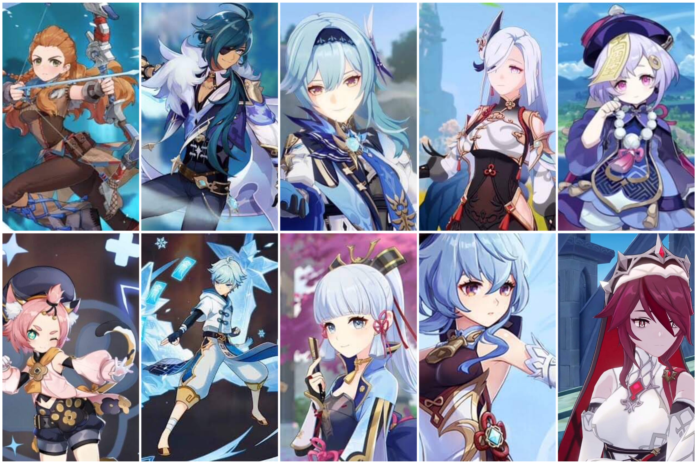

Cryo is a status effect that reduces overall character speed. While affected by the Cryo status, all animation speed will decrease by 15% (stacking multiplicatively). Unlike other elements, the Cryo status can also be applied to certain objects, such as Ores, Thunderwoods, Thunder Dwellings, and Amber's Baron Bunny, and can allow certain elemental reactions to occur on such objects.
Cryo Element Characters
All Cryo characters in Genshin Impact are Aloy, Chongyun, Diona, Eula, Ganyu, Kaeya, Kamisato Ayaka, Qiqi, Rosaria, and Shenhe.
